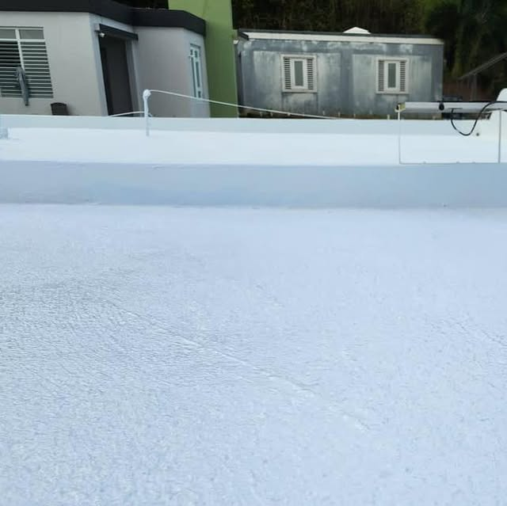
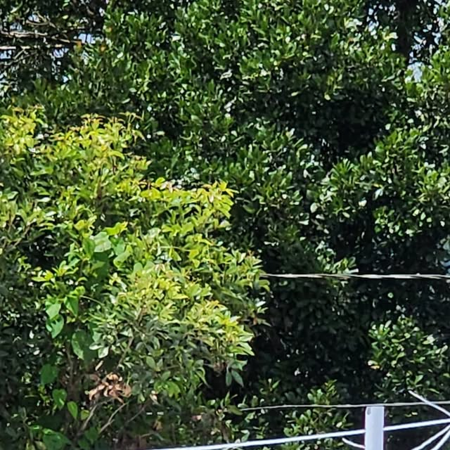
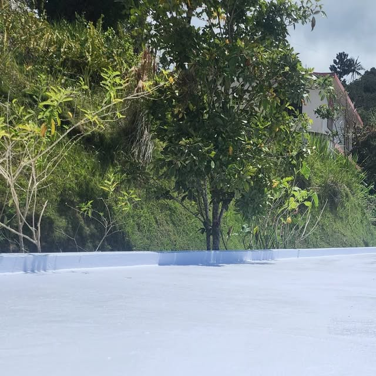

Toda la isla · Puerto Rico
29 AÑOS SELLANDO PUERTO RICO
El oficio de toda una vida: filtraciones identificadas, empozamientos corregidos y garantía escrita de 10 a 20 años, en los 78 pueblos.
Toda la isla · Puerto Rico
El oficio de toda una vida: filtraciones identificadas, empozamientos corregidos y garantía escrita de 10 a 20 años, en los 78 pueblos.
Lo que hacemos

29 años encontrando de dónde viene el agua: diagnóstico certero antes de sellar.

Corregimos empozamientos, grietas y puntos débiles del techo.

Sellado detallado de uniones, tubos y cables, los puntos por donde más filtra.

Sistemas con garantía escrita de 10 a 20 años, en papel firmado.

Limpieza completa del techo como base de un buen sellado.
Galería





Quiénes somos
Techos Eduardo: 29 años en el oficio sellando techos en los 78 pueblos de Puerto Rico. Identificación de filtraciones, corrección de empozamientos y grietas, y sistemas con garantía escrita de 10 a 20 años. Eduardo mismo contesta.
Llamar 939-451-6197Preguntas frecuentes
Estamos en Toda la isla, Puerto Rico.
Sellado de techos con 29 años de oficio y más: Identificación de filtraciones, Corrección de empozamientos y grietas, Sellado de uniones, tubos y cables.
Escríbenos por WhatsApp al 939-451-6197 o llena el formulario de contacto y te respondemos por WhatsApp.
Sí, síguenos en Instagram como @techoseduardopr.
29 años en el oficio. Sistemas con garantía escrita de 10 a 20 años en toda la isla.
29 años en el mismo oficio
Llama y habla directo con Eduardo: él mismo contesta, diagnostica y firma tu garantía.
939-451-6197Sellado de techos · @techoseduardopr · Toda la isla